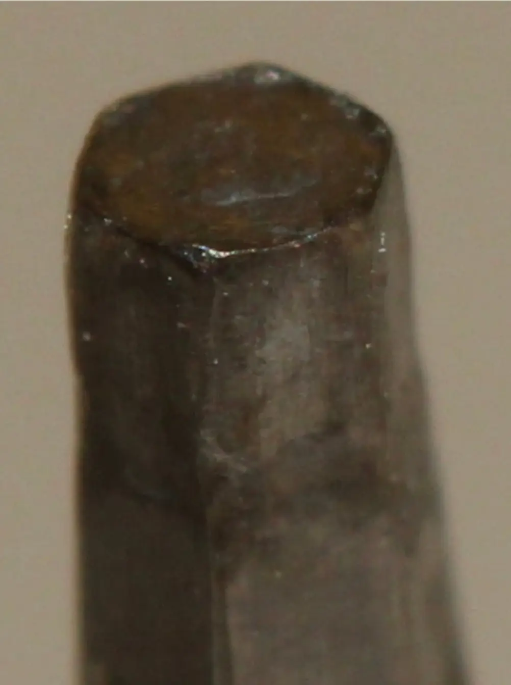

یکی از سختترین مشکلات و کامپلیکیشنهای پیچ در پروتزهای متکی بر ایمپلنت، پیچی است که تورک گرفته و گل آن هرز شده؛ به عبارتی نه سفت میشود و نه باز.
مستقل از اینکه برای حل این مشکل چه راهکارهایی وجود دارد، دلیل این اتفاق میتواند موارد متعددی باشد؛ از جمله عدم تطابق سایز آچار با گل پیچ، عدم الاین شدن درست آچار هنگام تورک دادن، تورک بیش از حد، پیچ فیک یا ناسازگار با سیستم، آلودگیهای موجود در گل پیچ، آسیب گل پیچ در لابراتوار یا کلینیک و …

یکی از شایعترین دلایل این اتفاق، استفاده از آچارهای کهنه یا مستعمل است. آچارهایی که بهدرستی در گل پیچ تطابق پیدا نکرده و هنگام تورک دادن باعث دفورمیشن و آسیب جدی در گل پیچ میشوند.
نشانهٔ هشداردهندهٔ مهم
یکی از اولین نشانههای این اتفاق، گیر کردن آچار در گل پیچ پس از تورک دادن و سختی جدا شدن آچار از گل پیچ است.
این اتفاق یک هشدار است؛ نشانهای که میگوید این آچار دیگر نباید برای تورک نهایی هنگام تحویل استفاده شود. چنین آچاری باید از «مقام تورک دادن» تنزل پیدا کند و صرفاً برای باز و بسته کردن پیچ بین مراحل کار، بدون تورک نهایی، استفاده شود.
بسته به نوع سیستم و جنس آچار، معمولاً توصیه میشود بعد از حدود ۴۰ تا ۶۰ بار تورک دادن، آچار از چرخهٔ تورک نهایی بازنشسته شود.